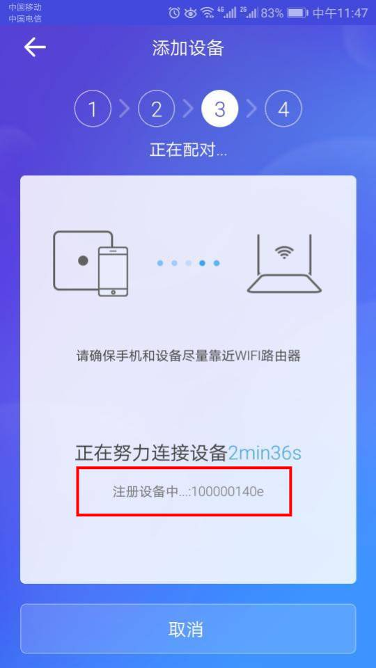

测试工具的下载以及测试数据准备，为请求平台设备数据以及控制设备提供数据认证基础。
测试APP下载
测试帐号注册
下载测试APP后，在APP上注册帐号。
登录
用注册的帐号登录测试APP。
设备数据导入
说明：销售跟进设备数据导入，正常情况下会实时处理。
1,如果购买的测试设备上有设备id，直接提供给对接销售。
2,设备上无法看到设备id。测试APP配对添加设备时，会显示设备id，见下图红框。设备id格式1000******。提供设备id给对接销售

添加设备
使用测试APP，配对添加购买的设备(如配对设备过程中，出现找不到设备提示，需提供设备id，由开发导入数据到测试环境)。
控制设备
设备上线后，测试APP上控制设备。